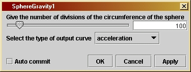
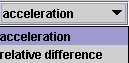

SphereGravityversion 1.0
© 2003 Bernard Schutz
|
As described in Investigation 4.3, the program uses a simple method: it just breaks the shell into a large number of sections, and treats each section as if it were a point-mass. It then adds up the gravitational accelerations of all the "points" to approximate the acceleration created by the shell. It computes this acceleration at different places inside and outside the shell and outputs the results.
A computer program like this cannot prove the theorem exactly, but it can demonstrate the the theorem is true to any desired level of accuracy. In this case, the user can change the accuracy of the calculation by changing the number of divisions into which the shell is broken in order to do the computation. The larger the number of divisions, the smaller is each "particle", and the more accurate is the calculation. The user can choose to output the difference between what the program computes and what Newton's theorem predicts; if this difference gets smaller as the accuracy of the computation improves, then that is a very strong indicator of the correctness of the theorem.
The parameter window shown here allows the user to determine the accuracy of the computation of the gravitational acceleration of the sphere, and to decide what information to output. The first parameter is the number of divisions of the circumference of the sphere that are used in breaking up the sphere into an equivalent number of point particles. The number of particles will be approximately the square of this number, since both latitude and longitude will be divided into this number of divisions. The more divisions, the more accurate the computation. The slider has a maximum value of 10000, which will be enough to show that the computation is very close to the theoretical result. If you want numbers larger than 10000, you may type any integer into the window in this parameter window, but beware that larger values will take more computer time, approximately as the square of the number of divisions.
The
second parameter
is a drop-down list (choice box) that allows the user to choose what
kind
of information to display in the output graph. The first choice,
"acceleration",
outputs the total acceleration of gravity for this shell. You will see
from the output that, outside the shell (whose radius is 1), there is
the
characteristic 1/r2 falloff, and inside the shell the
acceleration of gravity is zero. The second choice, "relative
difference",
is actually more informative. It computes the difference between the
Newtonian
result and the present numerical one, divided by the Newtonian result.
Actually, since the Newtonian acceleration inside the shell is zero,
the
data inside the shell are not divided by anything, they are just
reproduced
exactly as if one had chosen "acceleration". But outside the sphere
only
the relative difference is shown.
The program begins (after some initialization steps) with a loop to add up the mass of the shell by dividing the shell into the small "tiles" and adding up the masses of each of them. This is followed by the main computation of the acceleration, which uses two "for" loops, one inside the other. Computer specialists call this "nesting": the inner loop is nested inside the outer one, and the inner one executes completely for each iteration of the outer one. In this case, the outer one steps through many different places where we could compute the acceleration, while the inner one does the acceleration computation for each of these locations. The outer loop takes 1000 different locations in the range from r = 0 (the center of the shell) to r = 100, with the shell having radius r = 1.
The final part of the code converts the acceleration into a relative
acceleration if that is what the user has chosen.
If you want to change the program you will have to re-compile it, as explained by the help file Using Triana for Gravity from the ground up.
/*
A String that governs what data
is written to the output. If the
String equals "acceleration" then
the output is the full acceleration
as calculated by this program. If
the String equals "relative difference"
then the output has two different
forms. Outside the sphere, the values
output are the differences between
the acceleration computed here
and the prediction of Newton,
divided
by the Newtonian value. Inside
the sphere, where the Newtonian
acceleration is zero, the values are the
acceleration computed here divided
by the Newtonian acceleration just
outside the shell. Can be chosen
by the user.
*/
private String outputType;
/*
The relative thickness of the shell,
i.e. the ratio of its thickness
to its radius. This does not affect
the approximation, since the tiles
are always replaced by points, no
matter how thick, but it does affect
the total mass of the shell. Set
here to a fixed value of 0.001.
*/
private double epsilon = 0.001;
/*
Converts degress to radians.
*/
private double degToRad = Math.PI/180.0;
/*
Define a
number of variables needed in the program:
- dPhi is
the angular size, in radians, of the divisions of
the shell around the equator. The equator is divided into
nDiv divisons.
- dTheta
is the angular size, in radians, of the divisions of
the shell from pole to pole. Like the equator, the meridian
is divided into nDiv divisions.
- theta
will be used for the value of the latitude of each tile,
and is set to the latitude at the center of the tile. The
value set here is the value associated with the first set of
tiles, around the south pole.
- mass will
be used to compute the mass of the shell. It starts
at zero and will be incremented by the mass of each tile.
- accel
will be used to compute the acceleration produced by
the shell at any position. It starts at zero and will be
incremented by the accleration of each tile.
- dAccel
will be used for the value of the acceleration toward
the center of the shell produced by each tile.
- r will
be used for the radial positions at which the acceleration
will be evaluated.
- dm will
be used for the value of the mass of each tile
- x, dist,
s, j, and k are variables used for intermediate
results in various loops.
- newton
is a variable that will be used to hold the value of
the acceleration as predicted by Newton.
-
acceleration
is an array that will hold the values of the
acceleration computed at the different radii.
- radius
is an array that will hold the values of the radii
themselves.
- title
will be used at the output step to pass a graph title
to the grapher, to show which output type is being plotted.
- label
will be used at the output step to pass a label for
the vertical axis to the grapher, according to the ouput type.
*/
double dPhi =
360.0*degToRad/nDiv;
double dTheta = 0.5*dPhi;
double theta =
0.5*dTheta
- 90*degToRad;
double mass = 0.0;
double accel = 0.0;
double dAccel, r, x,
dist, dm, s, newton;
int j, k;
double[] acceleration
= new double[1000];
double[] radius = new
double[1000];
String title =
"Gravitational
acceleration due to shell";
String label =
"acceleration
((m/s)/s)";
/*
First
compute
the mass of the shell by adding up the masses of
all the
tiles. This requires a loop over rings of contant
theta. All
the tiles in such a ring are identical.
*/
for ( k = 0; k <
nDiv; k++ ) {
/*
The mass of each tile is its volume, since we take the
density equal to 1. Its volume is the product of the
thickness epsilon with the area of the tile. The linear
size of the tile along the line of latitude is
dPhi * cosine(theta). Remember that theta starts out
with the value at the south pole, and so at the end of
the loop it must be changed to the next value.
*/
dm = dTheta * dPhi * Math.cos(theta) * epsilon;
/*
The tiles at a given latitude are all identical, and there
are nDiv of them. So the contribution of this ring to the
mass is just nDiv times the values for each tile.
*/
mass += dm * nDiv;
theta += dTheta;
}
/*
Now begin
the loop over radial positions where the acceleration will
be computed.
This starts at the center and goes outwards to a value of
about 100
times the radius of the shell. To avoid division by zero,
the step
at exactly the radius of the shell is skipped and (after all
the other
calculations are done) the acceleration there is set to zero.
The loop
terminates when it has evaluated the acceleration at 1000
different
radii, starting at the center. Ten of these are inside the
shell.
For each radius, the value of the acceleration is stored in
the array
acceleration[].
*/
for ( j = 0; j <
1000; j++ ) {
r = j * 0.1;
radius[j] = r; // store the radius for this position.
if ( j != 10 ) { // skip the step where r = 1, the radius of the shell
/*
Again loop over rings of constant theta. All the tiles in
a given ring are at the same distance dist from the observation
point. The mass of each tile is dm as above, and each tile contributes
dAccel to the acceleration. Start off with the value of theta associated
with the tiles around the south pole again, and reset the initial value
of accel to zero.
*/
accel = 0.0;
theta = 0.5*dTheta - 90*degToRad;
for ( k = 0; k < nDiv; k++ ) {
s = Math.sin(theta); // used to avoid computing sin(theta) twice
dist = Math.sqrt( 1 + r*r + 2*r*s );
dm = dTheta * dPhi * Math.cos(theta) * epsilon; // tile mass as before
x = r + s; // x-distance from tile to observation distance r
dAccel = dm * x / (dist * dist * dist);
/*
The tiles at a given latitude are all identical, and there
are nDiv of them. So the contribution of this ring to the
acceleration is just nDiv times the value for each tile.
*/
accel += dAccel * nDiv;
theta += dTheta;
}
acceleration[j] = accel; // store the acceleration for this radius.
}
}
/*
Set the
missing acceleration at j = 10 (r = 1 ) to zero. We do this
just to
make sure that the array acceleration[] is full. The value
exactly
on the shell in Newtonian gravity depends on the thickness
of the shell
and on just where within the thickness we compute it, so it is not
important
for our purposes here, which is to demonstrate that the field outside
the shell
is that of a point mass and inside is zero.
*/
acceleration[10] = 0;
/*
Now deal
with the different output choices. If the user has selected
"acceleration"
then nothing needs to be done, since the array of the
same name
contains the required values. But if the user has chosen
"relative
difference" then we modify the contents of the same array
to contain
the required output.
The test
to see which option has been selected requires looking at the
contents
of the String called outputType, which is set by the user
in the user
interface panel. The Java String method "equals" performs
the test:
if the contents of the associated string equal the
given
argument
of the function, then the method returns the value
"true";
otherwise it returns "false". The method is invoked by
writing
[String name].equals([test string]), which in this case is
outputType.equals( "relative difference" ).
If the
contents
of the String outputType are identical to the given
argument
"relative difference" then this expression returns "true".
The
output
values if the user selects "relative difference" must
be computed
in different ways for points inside and outside the
shell.
Outside
the shell, we take the difference between the
computed
acceleration and the value Newtonian theory predicts,
divided
by Newtonian theory. Inside, where the Newtonian
acceleration
is zero, this won't work, so we just divide the
computed
acceleration by the value of the Newtonian acceleration
just outside
the shell. In both cases, if Newton is right, the
results
should be very small numbers, and should get smaller
(closer
to zero) as the accuracy (number of tiles of the shell)
is increased.
Note that
the Newtonian acceleration outside the shell is, in
our units,
just the mass of the shell divided by the square
of the
distance
to its center. We have computed the mass and
stored it
in the variable of the same name, and the radius is
in the array
radius[]. Since the radius of the shell is 1 in
our units,
the acceleration just outside the shell is equal to
the value
of the variable "mass".
*/
if (
outputType.equals(
"relative difference" ) ) {
for ( j = 0; j < 1000; j++ ) {
if ( j <= 10 ) acceleration[j] /= mass; // inside the shell
else
{
// outside the shell
newton = mass/(radius[j] * radius[j]);
acceleration[j] = (acceleration[j] - newton)/newton;
}
}
title = "Relative difference of computed and theoretical accelerations";
label = "fractional difference";
}
/*
As in
previous
programs, we output the data as the TrianaType Curve.
*/
Curve out = new Curve(
radius, acceleration );
out.setTitle(title);
out.setIndependentLabels(0,"distance
from center of shell");
out.setDependentLabels(0,label);
output( out );
}